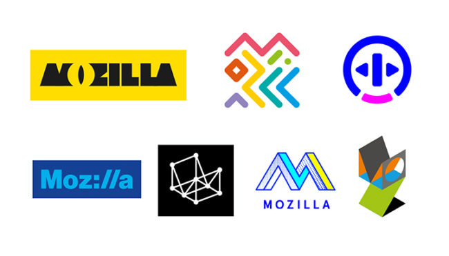
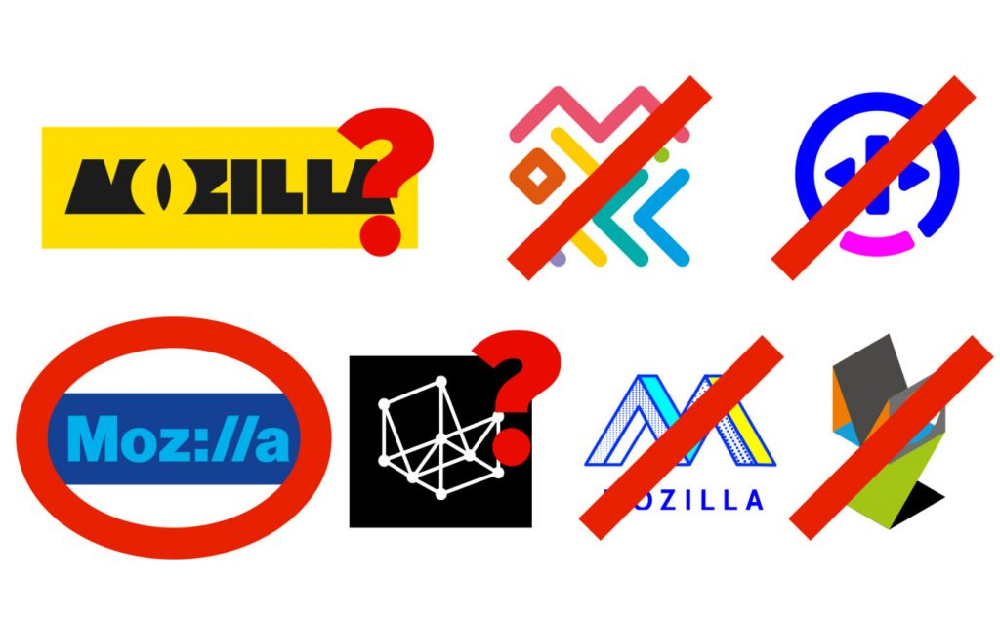

我們在 3 週前說明過 Mozilla 品牌識別的 7 個初始設計方向，希望能持續彰顯我們為整個 Web 所做的努力。根據 Mozilla 的發展策略、善美設計的原則，以及目前透過此開放程序所收到的反饋意見，我們在今天發表共 4 組候選設計圖，且在接下來的兩週內仍有可能繼續修改，才會正式進入全球性的消費者測試。我們預定在 10 月份時產生品牌識別的設計初稿。

如果你才剛得知此設計活動，可參閱這裡還有這裡了解初步細節。感謝此一活動引起許多 Mozillians 的強烈興趣。關心 Mozilla 的人再加上全球設計社群，我們獲得數十篇文章、數百則推文、數千筆建議，還有數萬字的熱烈反饋意見。如同大家相信 Mozilla 的透明度，我們將上面的熱烈反應都視為活動的成果。
感謝曾經提出寶貴意見的所有人。任何具建設性的意見均已協助 Mozilla 建構出更清晰的路。為了獲得更好的效果，會有某些人發現自己喜歡的設計概念可能未受採用。我們希望你還是能積極參與 Mozilla 未來的設計專案，並讓自己的設計為他人所看見。

優秀的遺珠
初始 7 款設計圖現已剔除 4 項。剩下有 1 項原封不動，另外 2 項則誘導出新的想法。我們放棄的「The Open Button」較難以明顯連結 Mozilla 的理念；而「Flik Flak」雖然有一群支持者，但根據個人觀感的不同，可說過於複雜，也可說過於簡單再繼續延伸出其他意義。
許多人剛開始很喜歡「The Impossible M」，但我們發現這個設計與目前公共領域中的許多設計過於相近。「Connector」雖然進行了一段時間，但最後還是用新的想法將之取代 (整體仍是稍嫌複雜)。
接下來要解決的事情
我們現正與倫敦的代理夥伴「johnson banks」密切合作，期能保持 24 小時不間斷的作業。目前確定會朝以下的新設計方向繼續努力：
- 先專注設計核心商標，特別是視覺上的簡化，再研究該如何將之延伸至設計系統之中。
- 深入探究恐龍圖案。從部落格的反應意見可清楚得知，我們應該再多增加大家已熟知的恐龍圖像。除了恐龍的眼睛之外，還有哪些史前時代的元素可以利用？
- 盛讚網路。除了用 3D 繪圖方式勾勒網際網路的意象之外 (就如同「Wireframe World」與「Flik-Flak」努力呈現的方向)，還有其他方式可述說網路運作之美，以及眾人是如何使用網路嗎？
- 調整並簡化「Protocol」與「Wireframe World」的線條；此兩款設計在最初就呈現了最多的承諾與意象。
作品將如何串連最核心的故事
專案的目前階段，我們篩選到最後 4 個應要述說的故事；其中 3 個是既有概念，1 個是全新發想：
- 急先鋒： 這仍是極強烈且能引起高度共鳴的領域，且若只能留下 1 個故事，也必須強調網路急先鋒的角色。
- 表達立場： 此一定位在最初討論即脫穎而出，目前仍極為屹立不搖。
- 自造者精神： 第一輪討論就受大家推崇的概念。Mozillian 社群是無法忽視的力量，且是整個 Mozilla 組織往前的動力。
- 網際網路的健全： Mozilla 是網路的守護神，也是將網路導向正軌的推手。
最後 4 款設計方向
我們將根據這 4 大方向，繼續調整下列 4 款設計圖像並交由關鍵閱聽人評量。你可點擊圖像已了解該組設計的設計理念，並個別給予意見。你也可在下方直接對 4 組設計留下自己的想法。
Route 1: Protocol
Route 2: Burst
Route 3: Flame
Route 4: Dino 2.0
現在你知道 4 個設計方向了，快讓我們知道你的想法！